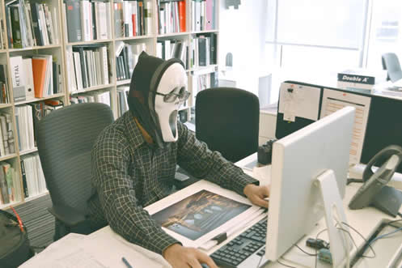

Cordial saludo, en la presente sección vamos a hablar sobre el control informático y sus diferentes formas en la empresa con el fin de mejorar la estrategia de seguridad informática.
¿Qué Es El Control Informático?
Se puede definir el control informático como "cualquier actividad o acción realizada manual y/o automáticamente para prevenir, corregir errores o irregularidades que puedan afectar al funcionamiento de un sistema para lograr o conseguir sus objetivos.
Los controles se clasifican en los siguientes:
- Controles preventivos: Para tratar de evitar el hecho, como un software de seguridad que impida los accesos no autorizados al sistema.
- Controles detectivos: Cuando fallan los preventivos para tratar de conocer cuanto antes el evento. Por ejemplo, el registro de intentos de acceso no autorizados, el registro de la actividad diaria para detectar errores u omisiones, entre otros.
- Controles correctivos: Facilitan la suelta a la normalidad cuando se han producido incidencias. Por ejemplo, la recuperación de un fichero dañado a partir de las copias de seguridad.
Prevenir el robo de datos tales como números de cuentas bancarias, información de tarjetas de crédito, contraseñas, documentos relacionados con el trabajo, hojas de cálculo, etc. es algo esencial durante las comunicaciones de hoy en día. Muchas de las acciones de nuestro día a día dependen de la seguridad informática a lo largo de toda la ruta que siguen nuestros datos.
Los ataques más utilizados en contra de un sistema informático son los troyanos, los gusanos y la suplantación y espionaje a través de redes sociales. También son populares los ataques DoS/DDoS, que pueden ser usados para interrumpir los servicios. A menudo algunos usuarios autorizados pueden también estar directamente involucrados en el robo de datos o en su mal uso.
Hay también ciberdelincuentes que intentarán acceder a los ordenadores con intenciones maliciosas como pueden ser atacar a otros equipos o sitios web o redes simplemente para crear el caos. Los hackers pueden bloquear un sistema informático para propiciar la pérdida de datos. También son capaces de lanzar ataques DDoS para conseguir que no se pueda acceder a sitios web mediante consiguiendo que el servidor falle.

Ahora, sí se toman las medidas adecuadas, la gran mayoría de este tipo de ataques pueden prevenirse, por ejemplo a través de la creación de diferentes niveles de acceso, o incluso limitando el acceso físico.
Las medidas de seguridad informática que puedes tomar incluyen:
- Asegurar la instalación de software legalmente adquirido: por lo general el software legal está libre de troyanos o virus.
- Suites antivirus: con las reglas de configuración y del sistema adecuadamente definidos.
- Hardware y software cortafuegos: los firewalls ayudan con el bloqueo de usuarios no autorizados que intentan acceder a tu computadora o tu red.
- Uso de contraseñas complejas y grandes: las contraseñas deben constar de varios caracteres especiales, números y letras. Esto ayuda en gran medida a que un hacker pueda romperla fácilmente.
- Cuidado con la ingeniería social: a través de las redes sociales los ciberdelincuentes pueden intentar obtener datos e información que pueden utilizar para realizar ataques.
- Criptografía, especialmente la encriptación: juega un papel importante en mantener nuestra información sensible, segura y secreta.
Para verificar el aprendizaje de esta sesión, lo invitamos a dar clic en la siguiente imagen y realizar la actividad: